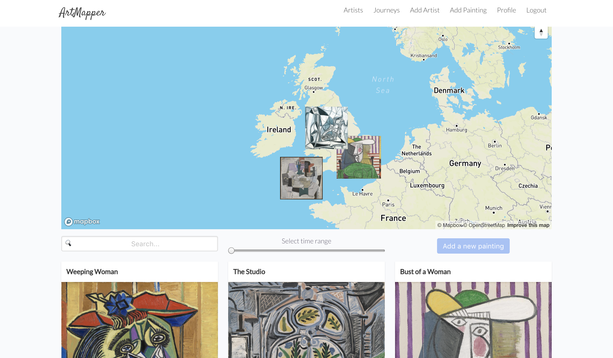

Work
Tippled

Tippled
Tippled is full-stack cocktail recipe application which allows users to see which drinks can be made using the ingredients they own. The application contains a database of cocktail recipes with their corresponding ingredients. Users can create an account and specify which ingredients they have. The cocktail recipes are then filtered by which ingredients the user has. I decided to work as a group with one other developer for this project. One area which I owned was the integration of cocktailDB API. This was my final project for General Assembly’s Web Development Immersive course.
- Python
- Flask
- SQLAlchemy
- PostgreSQL
- React.js
- JavaScript (ES6) / HTML5 / SCSS
ArtMapper
ArtMapper
A MERN full-stack application created in 7 days as a project for General Assembly's Web Development course. ArtMapper allows users to see where paintings are geographically located. Users can add artists to the database and specify where paintings are currently on display. Users can see works of art displayed on a map. This project uses 5 external APIs. This was a group project with two other developers.
- React.js
- Node.js
- JavaScript (ES6) / HTML5 / SCSS
- MongoDB & Mongoose
- BCrypt & Session Auth
- Chai
Blog...

Blog...
A full-stack blogging application using JavaScript, Express and EJS templates built in 5 days as part of General Assembly's Web Development course. Blog... is a simple blogging platform which offers moderated commenting, admin users, searching and saving of draft articles. I decided to concentrated on the having admin users and how they could moderate comments before they become public.
- JavaScript (ES6) / HTML5 / CSS
- Express & EJS
- MongoDB & Mongoose
- BCrypt & Session Auth
- git / gitHub
- Bulma
Deep Sea Dive

Deep Sea Dive
A JavaScript game made in 7 days as my first project for General Assembly's Web Development Immersive course. Deep Sea Dive is a one person game inspired by the French conservationist and filmmaker Jacques Cousteau. You move a submarine around avoiding mines. The aim is to capture as many specimen of sea life and return to the surface before the air supply runs out.
- JavaScript (ES6)
- jQuery
- HTML5 + HTML5 Audio
- CSS + CSS Animation